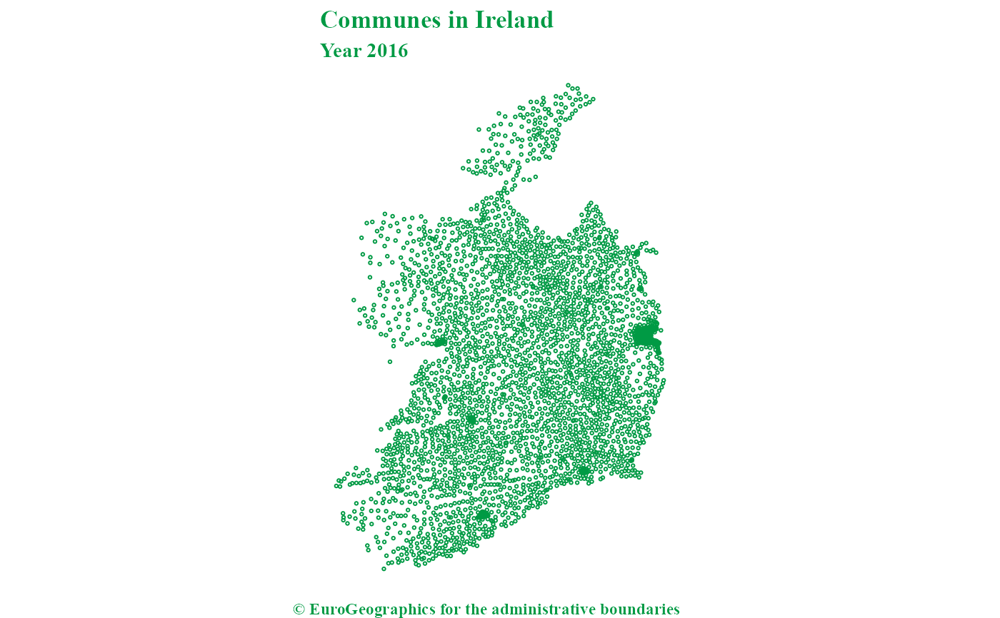

This dataset shows pan European administrative boundaries down to commune
level. Local Administrative units are equivalent to Communes,
see gisco_get_communes().
Usage
gisco_get_lau(
year = 2024,
epsg = 4326,
cache = deprecated(),
update_cache = FALSE,
cache_dir = NULL,
verbose = FALSE,
country = NULL,
gisco_id = NULL,
ext = "gpkg"
)Source
https://gisco-services.ec.europa.eu/distribution/v2/.
Copyright: https://ec.europa.eu/eurostat/web/gisco/geodata/statistical-units.
Arguments
- year
character string or number. Release year of the file. One of
"2024","2023","2022","2021","2020","2019","2018","2017","2016","2015","2014","2013","2012","2011".- epsg
character string or number. Projection of the map: 4-digit EPSG code. One of:
"4326": WGS84."3035": ETRS89 / ETRS-LAEA."3857": Pseudo-Mercator.
- cache
![[Deprecated]](figures/lifecycle-deprecated.svg) . These functions always
cache the result due to the size. See Caching strategies section
in
. These functions always
cache the result due to the size. See Caching strategies section
in gisco_set_cache_dir().- update_cache
logical. Should the cached file be refreshed? Default is
FALSE. When set toTRUEit would force a new download.- cache_dir
character string. A path to a cache directory. See Caching strategies section in
gisco_set_cache_dir().- verbose
logical. If
TRUEdisplays informational messages.- country
character vector of country codes. It could be either a vector of country names, a vector of ISO3 country codes or a vector of Eurostat country codes. See also
countrycode::countrycode().- gisco_id
Optional. A character vector of
GISCO_IDLAU values.- ext
character. Extension of the file (default
"gpkg"). One of"shp","gpkg","geojson".
Value
A sf object.
Details
The Nomenclature of Territorial Units for Statistics (NUTS) and the LAU nomenclature are hierarchical classifications of statistical regions that together subdivide the EU economic territory into regions of five different levels (NUTS 1, 2 and 3 and LAU, respectively, moving from larger to smaller territorial units).
The LAU classification is not covered by any legislative act. Geographical extent covers the European Union, EFTA countries, and candidate countries. The scale of the dataset is 1:100 000.
The data contains the National Statistical agency LAU code which can be
joined to LAU lists as well as a field GISCO_ID which is a unique
identifier consisting of the Country code and LAU code.
Total resident population figures (31 December) have also been added in some versions based on the associated LAU lists
Note
Please check the download and usage provisions on gisco_attributions().
See also
See gisco_bulk_download() to perform a bulk download of datasets.
See gisco_id_api_lau() to download via GISCO ID service API.
Other statistical units datasets:
gisco_get_census(),
gisco_get_coastal_lines(),
gisco_get_nuts(),
gisco_get_urban_audit()
Examples
# \dontrun{
lu_lau <- gisco_get_lau(year = 2024, country = "Luxembourg")
#> ! The file to be downloaded has size 74.6 Mb.
if (!is.null(lu_lau)) {
library(ggplot2)
ggplot(lu_lau) +
geom_sf(aes(fill = POP_DENS_2024)) +
labs(
title = "Population Density in Luxembourg",
subtitle = "Year 2024",
caption = gisco_attributions()
) +
scale_fill_viridis_b(
option = "cividis",
label = \(x) prettyNum(x, big.mark = ",")
) +
theme_void() +
labs(fill = "pop/km2")
}

# }